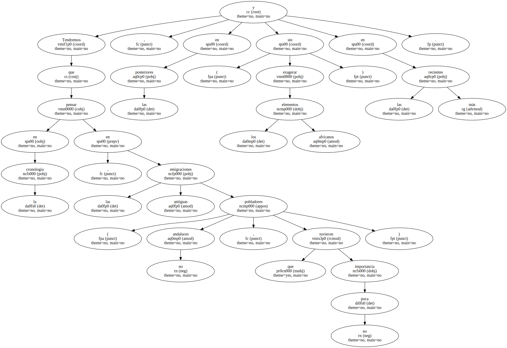
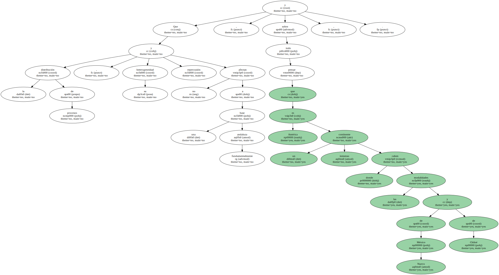
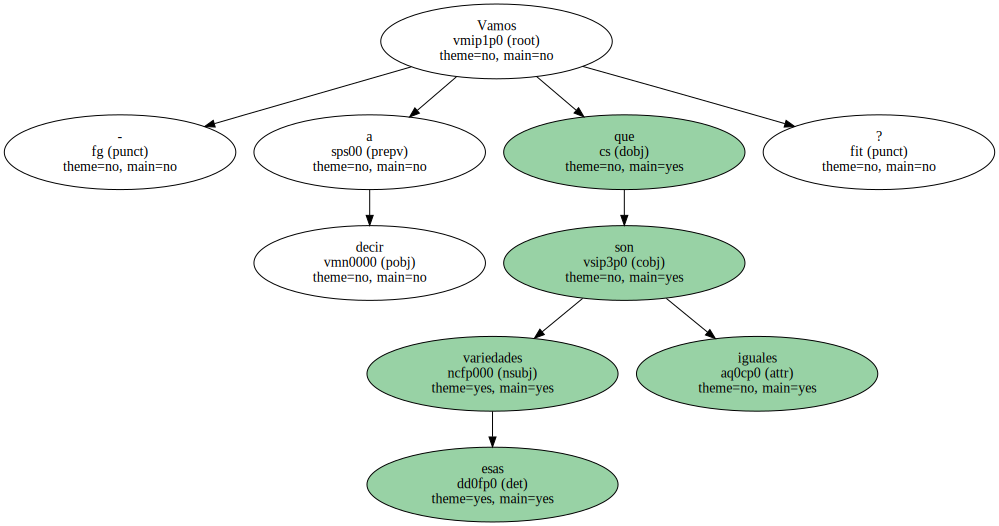
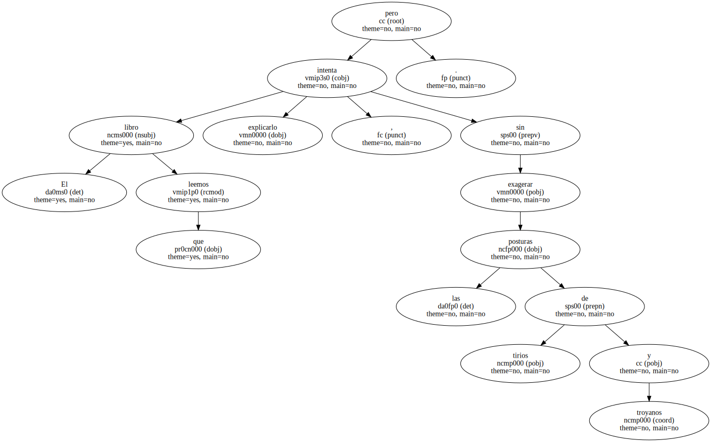
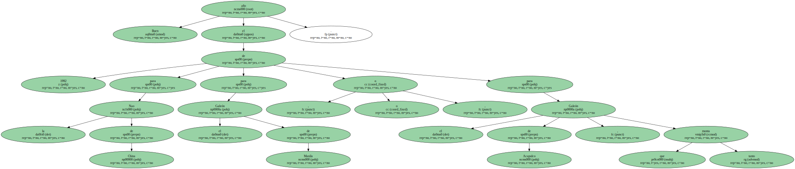

Tendremos que pensar en la cronología , en las emigraciones antiguas ( pobladores no andaluces , que tuvieron no poca importancia ) , en las posteriores ( sin exagerar los elementos africanos ) y en las más recientes.
Y en los procesos de adaptación , de adopción y de creación de estos quinientos años transcurridos.

Que la distribución de procesos , su heterogeneidad y repercusión no afectan a una base fundamentalmente andaluza y , sobre todo , pensar que América es un inmenso continente donde caben las modalidades de Nuevo México y de Chiloé.
- Vamos a decir que esas variedades son iguales.
El libro que leemos intenta explicarlo , pero sin exagerar las posturas de tirios y troyanos.
Buen año el de 1992 para la Nao de China , o para el Galeón de Manila , o para el Galeón de Acapulco , que tanto monta.
